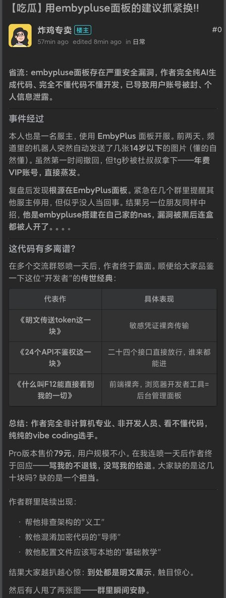
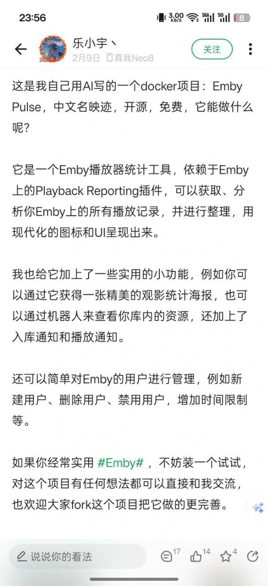
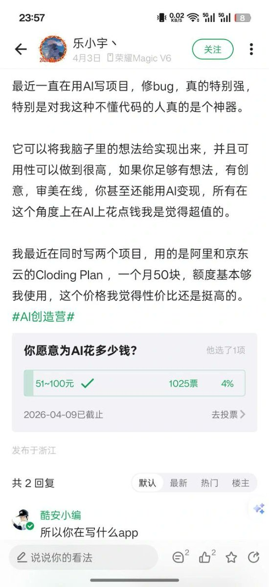
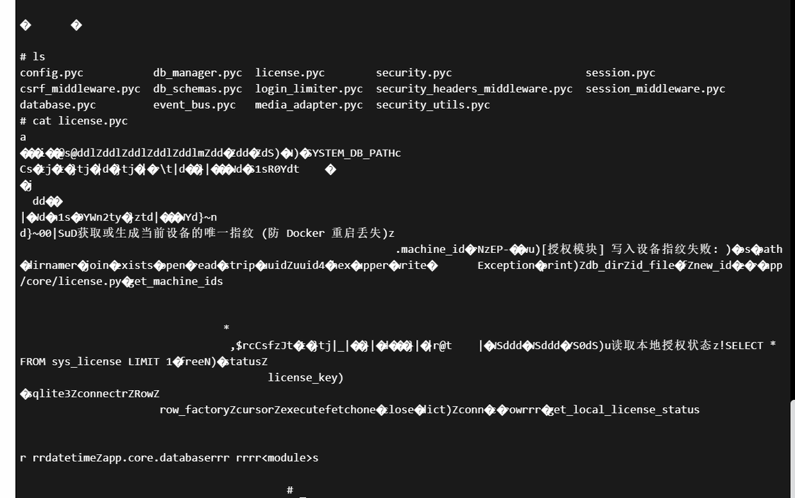

用embypluse面板的建议抓紧换，该面板存在严重安全漏洞，作者完全纯AI生成代码、完全不懂代码不懂开发，已导致用户账号被封、个人信息泄露
能给79块钱的真的冤大头了，代码是明文存在容器里的，完全不需要付费只需改几行代码就行。包括ns的某个大神vibe了发卡站，后台admin登录权限是放在localstorage里的，直接isadmin=true就可以进后台了
这是用国产AI写的吗？怎么安全防御和纸一样…… 用Claude或Codex都写不出那么抽象的东西。还是那句话，不懂代码的人，再怎么vibe coding都只是原地打转，但凡学点代码基础也不至于犯这种低级错误
能给79块钱的真的冤大头了，代码是明文存在容器里的，完全不需要付费只需改几行代码就行。包括ns的某个大神vibe了发卡站，后台admin登录权限是放在localstorage里的，直接isadmin=true就可以进后台了
这是用国产AI写的吗？怎么安全防御和纸一样…… 用Claude或Codex都写不出那么抽象的东西。还是那句话，不懂代码的人，再怎么vibe coding都只是原地打转，但凡学点代码基础也不至于犯这种低级错误



